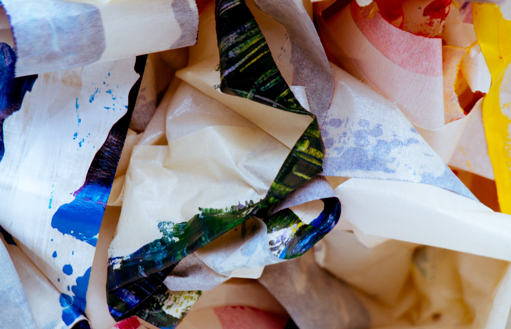

You walk over to the large trash bin and get ready to pounce in. Right as you do, you hear a few voices coming from inside the bin. You jump in and land in between a couple of trash bags with a cookie sticking out of one of them. As you go to grab it, a raccoon quickly takes it and screams when you two make eye contact. This causes a bunch of raccoon heads to pop up from the depths of the trash bin as they all begin to scream and scramble to fix themselves up. The thickest of the pack stares at you and asks, "Who are you? I don't recognize you..." You can either play it off in hopes that they don't attack you or snatch your cookie back real quick before running away.